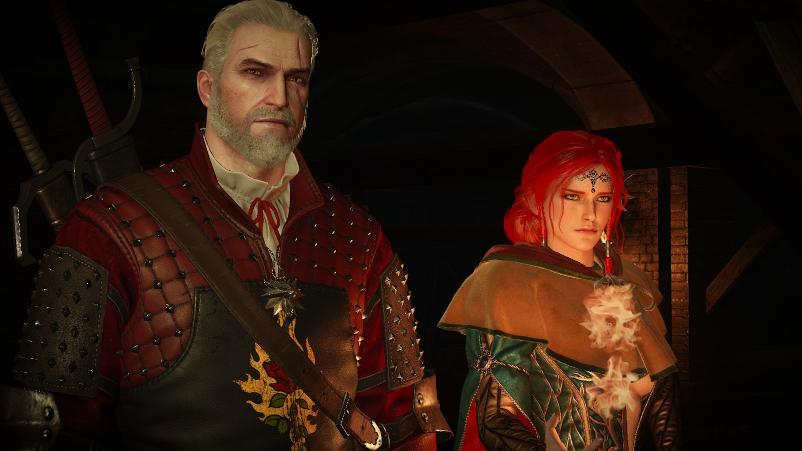
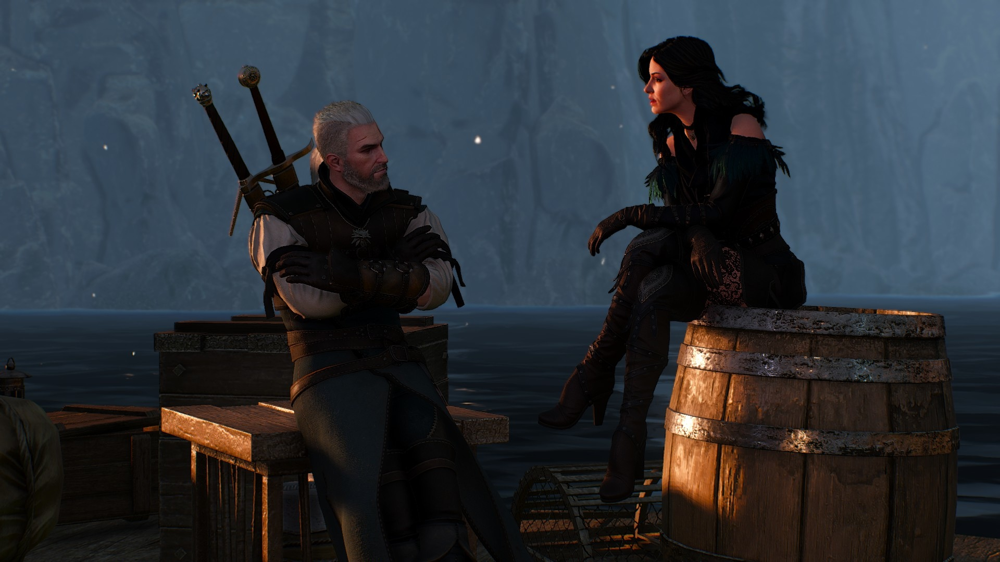

Durante suas aventuras pelo louco mundo de The Witcher 3: Wild Hunt, Geralt de Rivia vai encontrar personagens com quem pode se envolver romanticamente - e outras que vão tentar seduzi-lo. Tanto Yennefer quanto Triss podem se tornar amantes permanentes do protagonista, e há um monte de outros peixinhos espalhados pelos mares da vasta aventura da CD Projekt Red.
Os jogadores interessados em descolar um romance (ou noite de paixão) vão precisar ter bastante paciência. É preciso primeiro chegar em Velen e completar diversas missões da história principal antes de encontrar Keira Metz -- a primeira personagem que Geralt pode galantear -- ou Triss Merigold. Se Geralt está procurando por uma relação "menos duradoura", ele precisa de uma carta de salvo-conduto para chegar até Novigrad e encontrar um bordel.
Após completar as missões Hunting a Witch e Wandering in the Dark, Keira Metz vai convidar Geralt até a casa dela. Se ele aceitar o convite, vai precisar completar a missão A Towerful of Mice, ajudando a feiticeira a eliminar a maldição de uma ilha na região. Depois de completar a missão, Keira vai pedir mais um favor e depois irá convidar nosso herói para um banquete banhado pela luz da lua na floresta. No fim do jantar, Keira propõe que Geralt e ela se tornem "amigos coloridos." O jogador pode aceitar a oferta ou recusar educadamente.
Durante os games anteriores da franquia Witcher, o interesse amoroso principal de Geralt foi Triss Merigold. Ele a salvou diversas vezes do perigo, e a feiticeira fez o mesmo por ele mais vezes ainda. Ela até ajudou Geralt a recuperar sua memória, o que acabou fazendo com que Geralt lembrasse de sua antiga amante Yennefer. Em Wild Hunt, Geralt e Triss se encontram na cidade de Novigrad enquanto o bruxo procura por Ciri. Após completar a missão Count Reuven's Treasure, Triss vai pedir para Geralt encontrá-la em Novigrad. Quando ele vai até lá, ela pede ajuda para transportar um mago para fora da cidade na missão A Matter of Life and Death.
Se Geralt concordar, os dois tem que aparecer em um evento de gala na cidade. Enquanto esperam pelo contato, Geralt tem a opção de dar aquela xavecada marota em Triss, mas é interrompido antes de conseguir levar as coisas muito além. Após o fim da missão Now or Never, Triss decide deixar Kovir com os outros magos. Geralt pode pedir para feiticeira ficar para que eles possam tentar um romance novamente ou ele pode se declarar completamente e dizer que ama ela incondicionalmente.

Geralt e Yennefer podem se divertir duas vezes durante o jogo. Uma logo após o fim da missão The King is Dead - Long Live the King, e outra durante a missão No Place Like Home. Ao fim de The King is Dead, quando a sala fica cheia de gás letal, diga para Yennefer que você quer beijá-la. Depois que vocês escaparem, continue a sedução dizendo que você não se importaria em ver ela se trocar. Se você se envolver com Yennefer dessa maneira, você poderá ter outro momento romântico com ela se conversarem durante a missão No Place Like Home.

 Página Principal
Página Principal